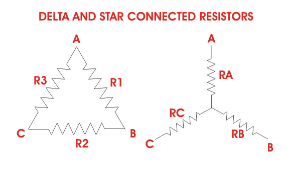

Three branches in an electrical network can be connected in numbers of forms but most common among them is either star or delta form. In delta connection, three branches are so connected, that they form a closed loop. As these three branches are connected nose to tail, they form a triangular closed loop, this configuration is referred as delta connection. On the other hand, when either terminal of three branches is connected to a common point to form a Y like pattern is known as star connection. But these star and delta connections can be transformed from one form to anoother. For simplifying complex network, delta to star or star to delta transformation is often required.
Delta - Star Transformation
The replacement of delta or mesh by equivalent star connection is known as delta - star transformation. The two connections are equivalent or identical to each other if the impedance is measured between any pair of lines. That means, the value of impedance will be the same if it is measured between any pair of lines irrespective of whether the delta is connected between the lines or its equivalent star is connected between that lines.

Consider a delta system that's three corner points are A, B and C as shown in the figure. Electrical resistance of the branch between points A & B, B & C and C & A are R1, R2 and R3 respectively. The resistance between the points A & B will be,
Now, one star system is connected to these points A, B, and C as shown in the figure. Three arms RA, RB and RC of the star system are connected with A, B and C respectively. Now if we measure the resistance value between points A and B, we will get,
Since the two systems are identical, resistance measured between terminals A and B in both systems must be equal.
Similarly, resistance between points B and C being equal in the two systems,
And resistance between points C and A being equal in the two systems,
Adding equations (I), (II) and (III) we get,
Subtracting equations (I), (II) and (III) from equation (IV) we get,
The relation of delta - star transformation can be expressed as follows.
The equivalent star resistance connected to a given terminal, is equal to the product of the two delta resistances connected to the same terminal divided by the sum of the delta connected resistances.
If the delta connected system has same resistance R at its three sides then equivalent star resistance r will be,
Star - Delta Transformation
For star - delta transformation we just multiply equations (v), (VI) & (VI), (VII) & (VII),(V) that is by doing (v)X(VI) + (VI)X(VII) + (VII)X(V) we get,
Now dividing equation (VIII) by equations (V), (VI) and equations (VII) separately we get,
 by
by